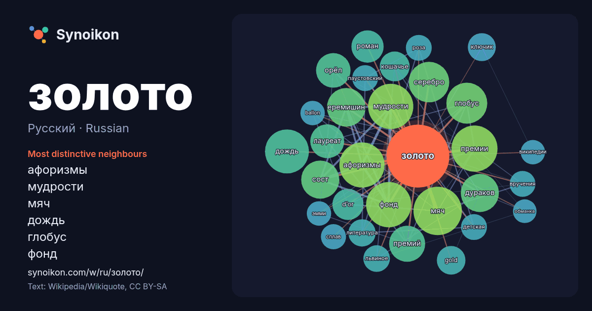

Русский · Russian · word of the day list
золото
“gold” · The words found around it in 1289 instances from Russian Wikipedia, Wikiquote.

Most distinctive neighbours
- афоризмы 56×
- мудрости 54×
- мяч 52×
- дождь 50×
- глобус 43×
- фонд 41×
- еремишин 41×
- дураков 40×
- сост 40×
- серебро 38×
- премий 32×
- орёл 29×
- премии 28×
- d’or 27×
- кошачье 25×
- gold 22×
- лауреат 22×
- ключик 22×
- львиное 20×
- паустовский 19×
× = how many times more often than in general Russian Wikipedia text.
Most frequent neighbours
- мяч 63
- премии 57
- афоризмы 55
- мудрости 55
- фонд 55
- дождь 52
- фильм 50
- глобус 45
- серебро 44
- еремишин 40
- дураков 39
- сост 39
- премий 35
- орёл 32
- лауреат 31
- роман 28
- d’or 26
- кошачье 24
- название 23
- gold 22
In context
- номером 79. Простое вещество золото — тяжёлый и мягкий благородный металл жёлто-оранжевого цвета. Русское слово «золото» восходит к праславянскому *zolto; Wikipedia snippets · Золото
- «Золото Маккенны» (англ. Mackenna's Gold) — американский художественный фильм 1969 года с Грегори Пеком, Омаром Шарифом, Телли Саваласом, Тедом Кэссиди Wikipedia snippets · Золото Маккенны
- заменяло золото в описаниях гербов пэров. Когда речь шла о гербах королей и принцев, вместо слова «золото», использовалось слово «солнце». Золото называлось Wikipedia snippets · Золото (геральдика)
- золото (синонимы: аметистовое золото и фиолетовое золото) — интерметаллид золота и алюминия с составом AuAl2. Содержание золота в AuAl2 около 79 %, и, следовате … Wikipedia snippets · Цветное золото
- Московское золото (исп. Oro de Moscú) или Золото Республики (исп. Oro de la República) — собирательное обозначение операции по переводу части золотого запаса Wikipedia snippets · Московское золото
- молодого кино «Новое движение» — Диплом «За смелость». Не золото, фильм 2026 // Кино Mail «Не золото»: досмотр истинности идеалов вместе с «НЕОСКАН» // neo-scan Wikipedia snippets · Не золото
- Золото дураков: Цитаты в Викицитатнике Медиафайлы на Викискладе Золото дураков (англ. Fool's Gold), то же, что золота́я обма́нка, также кошачье золото Wikipedia snippets · Золото дураков
- «Золото джунглей» (исп. Oro; дословно — «Золото») — приключенческий фильм 2017 года режиссёра Агустина Диаса Янеса. Снят по рассказу испанского писателя Wikipedia snippets · Золото джунглей
More Russian words
- бог
- власть
- вода
- деньги
- жизнь
- здоровье
- искусство
- истина
- история
- климат
- кошка
- мост
- наука
- пища
- поезд
- природа
- работа
- семья
- сердце
- смерть
- собака
- язык
Precomputed on 2026-10-09 with default settings (±5 words, medium corpus). The interactive map can refresh it with live data.